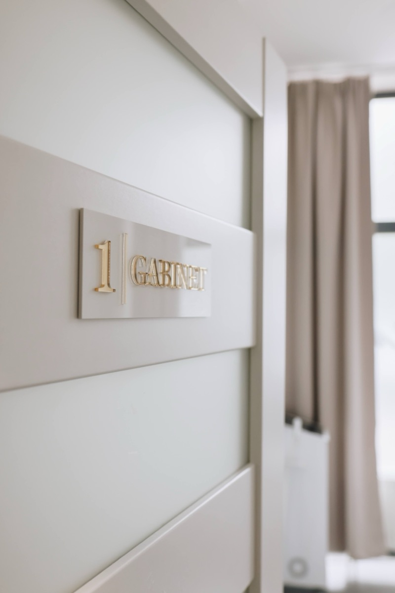
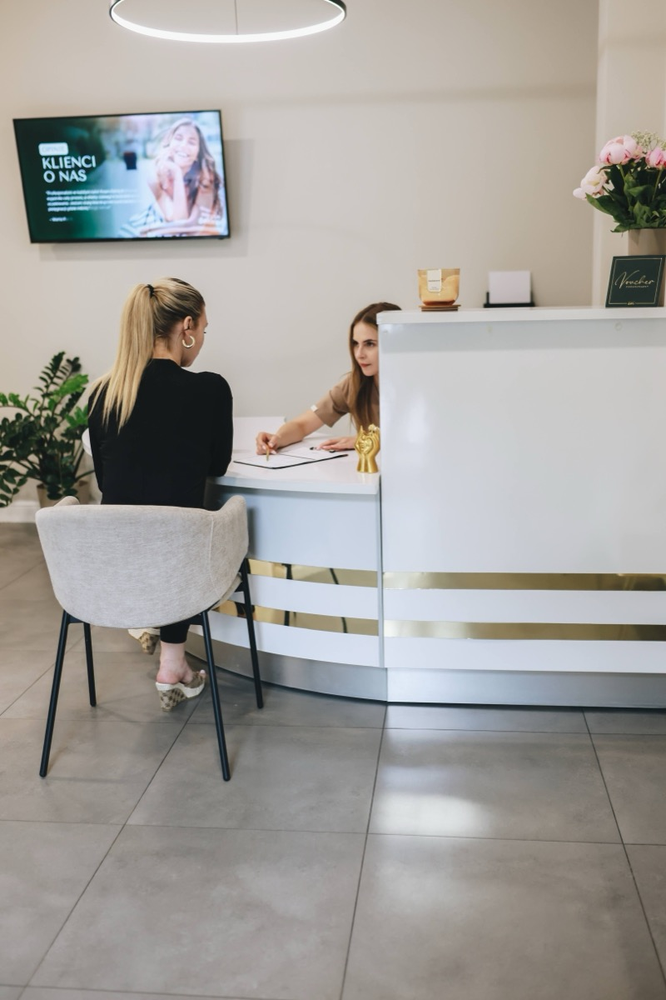
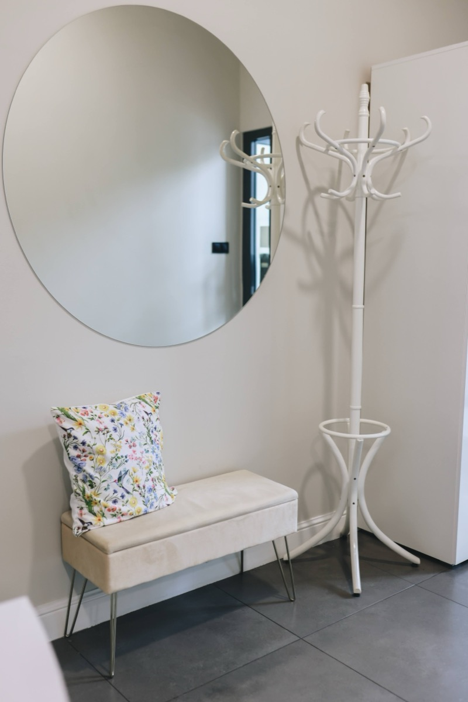
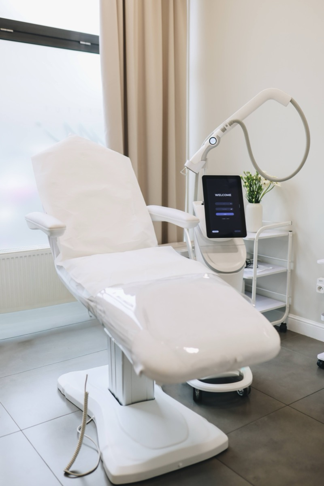

Przestrzeń INSTYTUTem.™
Medyczny rygor w butikowej oprawie.
Stworzyliśmy przestrzeń, która łączy rygorystyczne standardy kliniczne z absolutnym wyciszeniem. Żadnego pośpiechu, anonimowości czy chłodnej szpitalnej atmosfery — tylko intymność, czas i pełne skupienie na Twojej skórze.
Intymność & Dyskrecja
Detale, które budują spokój.
Zaawansowane terapie wymagają zaufania. Nasze gabinety zaprojektowaliśmy z myślą o pełnej prywatności i ukojeniu zmysłów — od wyciszonych akustycznie przestrzeni po ergonomiczne fotele medyczne, które zdejmują napięcie przed zabiegiem.




Złoty Standard Medyczny
Certyfikowane technologie. Zero zamienników.
Nie pracujemy na azjatyckich zamiennikach ani urządzeniach typu IPL udających lasery. Inwestujemy wyłącznie w oryginalny, certyfikowany sprzęt medyczny (FDA, CE), którego profil bezpieczeństwa i skuteczność są poparte twardymi badaniami klinicznymi.

LightSheer® DUET™
Medyczny laser diodowy 805 nm z certyfikatem FDA. Złoty standard trwałej epilacji w autorskim protokole chłodzenia.

cooltech®
Kriolipoliza — redukcja miejscowej tkanki tłuszczowej.

LUMIVEX®
Frakcyjny laser dwóch długości fali (1927 nm i 1550 nm), pobudzający naturalną produkcję kolagenu. Precyzyjna regeneracja skóry bez naruszania jej powierzchni.

LPG® Alliance
Masaż podciśnieniowy najnowszej generacji z Francji. Modelowanie sylwetki i redukcja cellulitu bez bólu, siniaków i okresu rekonwalescencji.